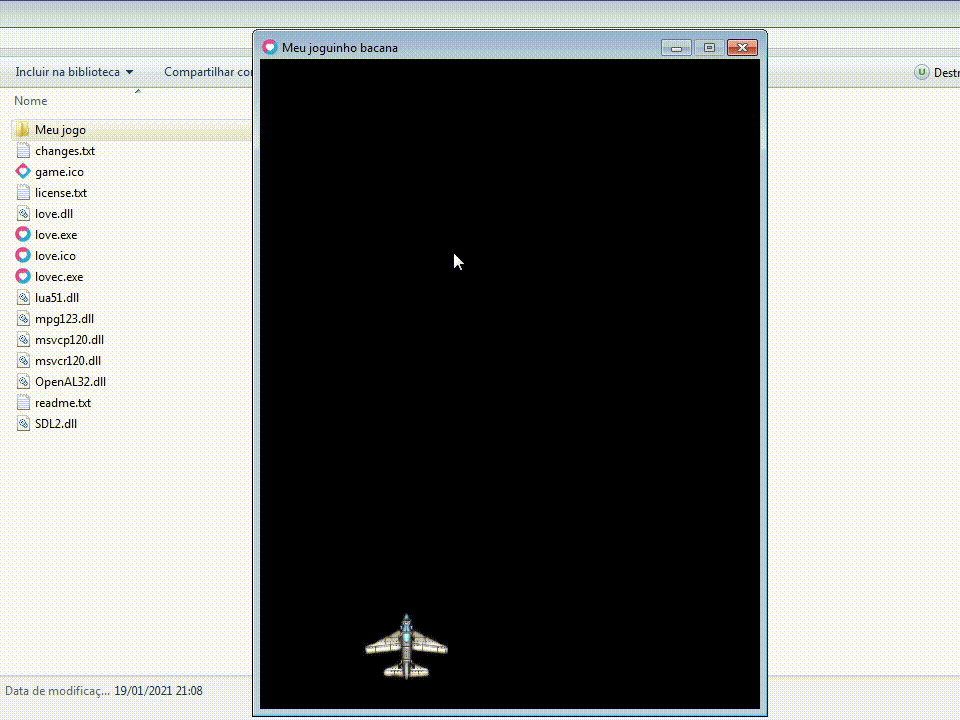
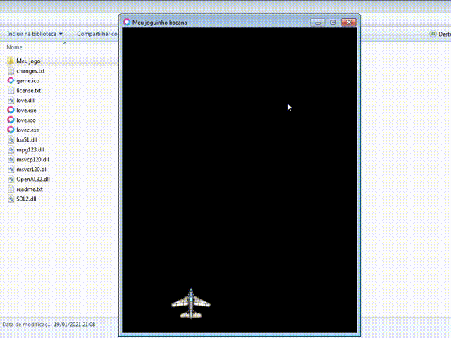

Seu primeiro jogo em 200 linhas - Parte 2
Essa é a segunda parte do tutorial, você pode acessar as outras partes aqui: parte 1, parte 2 e parte 3.
Na primeira parte nós preparamos a base do projeto e desenhamos uma imagem na tela, agora nós vamos transformar essa imagem estática em algo que possamos movimentar.
Passo 3: Criando o objeto do jogador
No seu "main.lua", coloque:
jogador = {
x = 100,
y = 550,
velocidade = 500,
imagem = nil,
}
Aqui nós criamos uma table para armazenar as variáveis do jogador. Temos as variáveis x e y para guardar a posição, velocidade que vamos usar na movimentação, e imagem que é onde nós vamos colocar a imagem do jogador.
Agora vamos precisar substituir o código. Iremos carregar a imagem na variável imagem do jogador ao invés da variável jogadorImg. Além disso, faremos essa imagem ser desenhada na posição do jogador:
-- jogadorImg = nil Não vamos usar mais essa variável, então pode apagá-la
function love.load()
jogador.imagem = love.graphics.newImage("imagens/jogador.png")
end
function love.draw()
love.graphics.draw(jogador.imagem, jogador.x, jogador.y)
end
Passo 4: Movimentação do jogador
Agora nós iremos começar a usar mais o love.update. Coloque isso dentro dele:
function love.update(dt)
if love.keyboard.isDown("left") then
jogador.x = jogador.x - jogador.velocidade * dt
elseif love.keyboard.isDown("right") then
jogador.x = jogador.x + jogador.velocidade * dt
end
end
Em cada frame nós verificamos se a tecla "left" (direcional esquerdo) está pressionada. Caso esteja, nós pegamos a velocidade do jogador, multiplicamos por dt e então subtraímos esse valor da posição X do jogador. Depois fazemos a mesma coisa com a tecla "right" (direcional direito), porém nós adicionamos o valor à posição X do jogador.
Caso esteja no Android, será necessário um pequeno truque para fazer os controles no touch. O que nós vamos fazer é dividir a tela horizontalmente em 3 partes: esquerda, centro e direita. Depois nós verificamos se o lado esquerdo ou direito da tela está sendo pressionado e então movemos o jogador para essa direção:
function love.update(dt)
local area = love.graphics.getWidth()/3
if love.mouse.isDown(1) then
if love.mouse.getX() < area then
jogador.x = jogador.x - jogador.velocidade * dt
elseif love.mouse.getX() > love.graphics.getWidth() - area then
jogador.x = jogador.x + jogador.velocidade * dt
end
end
end
Aqui nós usamos a função love.graphics.getWidth para obter a largura da tela, dividimos esse valor por 3 e então guardamos esse resultado na variável local área. Depois usamos a função love.mouse.isDown para verificar se o mouse (ou o touch) está pressionado. Caso esteja, nós usamos a função love.mouse.getX para obter a posição X do touch e verificamos se é menor que area (ou seja, o lado esquerdo da tela) e então diminuímos a velocidade * dt da posição do jogador. Em seguida, da mesma forma, verificamos se a posição X do touch é maior que a largura da tela - area (ou seja, o lado direito da tela) e então adicionamos a velocidade * dt na posição do jogador.
Primeiro você precisa saber que o love.update é executado de acordo com o FPS (frames por segundo), então se o jogo estiver rodando a 20 FPS, tudo dentro do love.update será executado 20 vezes a cada segundo, se estiver rodando a 5 FPS então tudo será executado 5 vezes a cada segundo e por aí vai.
Para explicar melhor, considere este código como exemplo:
valor = 0
function love.update(dt)
valor = valor + 2
end
Aqui nós adicionamos 2 à variável valor sempre que o love.update for executado. Se o jogo estiver rodando a 60 FPS, a cada segundo será adicionado 2 * 60, ou seja, 120 ao todo. Porém se o mesmo código for executado em uma máquina mais fraca que só consegue rodar o código a 20 FPS, então a cada segundo será adicionado 2 * 20, ou seja, 40 ao todo. Isso faz com que o código se torne inconsistente, pois o resultado vai depender do desempenho da máquina que está executando.
Para corrigir essa inconsistência nós usamos o Delta Time (Tempo Delta), que é o tempo passado entre o frame anterior e o atual. Normalmente o Delta é um número decimal bem pequeno, menor que 1 na maioria das vezes e que aumenta na medida que o FPS diminui. Ele é usado em operações em que um valor é alterado constantemente, como temporizadores e movimentação de personagens. Vamos ver o código anterior, agora usando o Delta:
valor = 0
function love.update(dt) -- O Delta é passado no argumento dt
valor = valor + 2 * dt
end
Adicionando 2 multiplicado pelo Delta a cada frame, nós garantimos que sempre será adicionado 2 a cada segundo, independente se o código está sendo executado a 20 FPS ou 60 FPS, pois o Delta está equilibrando essa inconsistência de FPS.
Agora podemos executar o jogo para testar os controles:
Você provavelmente notou que o jogador consegue andar para fora da visão da tela, o que deixa a gameplay um pouco estranha. Para corrigir isso nós precisamos confinar o jogador entre as bordas da tela:
jogador.x = math.max(jogador.x, 0)
jogador.x = math.min(jogador.x, love.graphics.getWidth() - jogador.imagem:getWidth())
Aqui nós usamos duas funções bem úteis que vem embutidas na linguagem:
math.max: Recebe 2 números como argumento e retorna o maior deles.
math.min: Recebe 2 números como argumento e retorna o menor deles.
Na primeira linha nós usamos o math.max para definir a posição X do jogador para 0 se ela for menor que 0, isso deve impedir que o jogador saia da tela pelo lado esquerdo.
Na segunda linha nós pegamos a largura da tela e subtraímos pela largura da imagem do jogador (obtida através da função getWidth do objeto Image), esse é o limite do lado direito considerando a largura do jogador. Depois usamos o math.min para definir a posição X do jogador para esse valor limite se ele for maior que esse valor, isso deve impedir que o jogador saia pelo lado direito.
Passo 5: Fazendo o jogador atirar
Para fazer o jogador atirar será necessário criar um objeto diferente para cada bala, depois passar por cada uma delas e movê-las, desenhá-las e destruí-las quando for necessário. A imagem que eu vou usar para as balas é a bullet_2_blue.png, que está no mesmo pack de sprites que pegamos a imagem do jogador. Coloque ela na pasta "imagens" e renomeie para "bala.png".
Nós vamos criar uma table para agrupar as balas que serão criadas e uma variável para carregar a imagem delas:
balaImg = nil
listaDeBalas = {}
function love.load()
jogador.imagem = love.graphics.newImage("imagens/jogador.png")
balaImg = love.graphics.newImage("imagens/bala.png")
end
Também vamos criar algumas variáveis no objeto do jogador. Nós vamos usá-las para fazer um temporizador que irá limitar a frequência de tiros, afinal, seria muito injusto conseguir atirar dezenas de balas por segundo, certo?
jogador = {
x = 100,
y = 550,
velocidade = 500,
imagem = nil,
recargaTiro = 0,
recargaMaxima = 0.25,
podeAtirar = true,
}
recargaTiro é o temporizador que irá limitar o tempo entre cada tiro.
recargaMaxima é o tempo máximo padrão entre cada tiro. Definimos ele para 0.25, o que significa que o jogador só vai poder atirar a cada 0.25 segundos.
podeAtirar indica se o tempo limite já se esgotou, permitindo que o jogador possa atirar novamente.
Agora podemos fazer o temporizador no love.update:
jogador.recargaTiro = jogador.recargaTiro - 1 * dt
if jogador.recargaTiro <= 0 then
jogador.podeAtirar = true
else
jogador.podeAtirar = false
end
Aqui nós fizemos um pequeno temporizador que subtrai 1 da variável recargaTiro do jogador por segundo. Depois definimos a variável podeAtirar do jogador para true se o temporizador recargaTiro estiver esgotado, ou para false caso não esteja.
Agora vamos fazer o gatilho do tiro. No teclado será o botão "z" que irá disparar:
if love.keyboard.isDown("z") and jogador.podeAtirar then
local novaBala = {
x = jogador.x + jogador.imagem:getWidth()/2,
y = jogador.y,
velocidade = 600,
imagem = balaImg,
}
table.insert(listaDeBalas, novaBala)
jogador.recargaTiro = jogador.recargaMaxima
end
Já no Android será a área do centro da tela que irá disparar. Como já temos um if e um elseif verificando se o touch está no lado esquerdo ou direito, então só precisamos adicionar um outro elseif que ele assumirá que o touch está na área do centro da tela:
local area = love.graphics.getWidth()/3
if love.mouse.isDown(1) then
if love.mouse.getX() < area then
jogador.x = jogador.x - jogador.velocidade * dt
elseif love.mouse.getX() > love.graphics.getWidth() - area then
jogador.x = jogador.x + jogador.velocidade * dt
elseif jogador.podeAtirar then
local novaBala = {
x = jogador.x + jogador.imagem:getWidth()/2,
y = jogador.y,
velocidade = 600,
imagem = balaImg,
}
table.insert(listaDeBalas, novaBala)
jogador.recargaTiro = jogador.recargaMaxima
end
end
O que acontece aqui é bem simples. Sempre que o jogador estiver com o botão de atirar pressionado e a variável podeAtirar for true, criaremos uma table que será o objeto da bala e usamos a função table.insert para inserir esse objeto na table listaDeBalas. Em seguida, definimos recargaTiro para recargaMaxima, reiniciando o temporizador.
O objeto da bala que criamos possui as variáveis x e y que representam a posição dela. Definimos a posição da bala para a mesma do jogador, porém só com isso ficaria um pouco esquisito já que a posição do jogador se refere ao canto superior esquerdo dele. Para corrigir isso, só precisamos adicionar a metade da largura do jogador na posição x da bala, isso fará que ela fique centralizada horizontalmente no objeto do jogador.
Além da posição, o objeto da bala também possui as variáveis velocidade que será usada para movê-la, e imagem que é a mesma que carregamos anteriormente. Colocamos essas variáveis no objeto apenas por conveniência, os valores serão os mesmos para todas as balas.
Agora vamos fazer a bala se mover. O movimento das balas consiste em apenas se moverem sempre para cima, então só precisamos passar por cada uma das balas e diminuir a posição y delas. Ainda no love.update, coloque:
for i, bala in ipairs(listaDeBalas) do
bala.y = bala.y - bala.velocidade * dt
if bala.y < 0 then
table.remove(listaDeBalas, i)
end
end
Aqui nós usamos um for loop em conjunto com o iterador ipairs. Esse iterador recebe uma table e então executa o código do loop para cada elemento dela. A cada vez que o loop é executado, o ipairs retorna o índice onde o elemento está localizado na table e o elemento em si, nós guardamos esses 2 valores nas variáveis i e bala, respectivamente.
Para cada bala na lista, nós subtraímos a velocidade * dt da posição y dela, o que fará que ela vá para cima. Após isso, nós verificamos se a bala está fora da tela e então a removemos para que ela não fique vagando infinitamente. Usamos função table.remove para remover a bala da lista, no primeiro argumento nós passamos uma table e no segundo argumento nós passamos o índice do elemento que iremos remover.
Agora precisamos desenhar cada uma das balas. Dentro do love.draw, coloque:
for i, bala in ipairs(listaDeBalas) do
love.graphics.draw(bala.imagem, bala.x, bala.y)
end
Aqui nós também usamos o ipairs para passar por cada bala e então desenhamos a imagem da bala na posição dela, da mesma forma que fizemos com o jogador.
Agora podemos executar o jogo para finalmente poder fuzilar com nossa nave incrível
Isso é tudo para a parte 2, já tivemos um bom progresso até aqui. Na parte 3 nós criaremos os inimigos e também aprenderemos a detectar colisões.